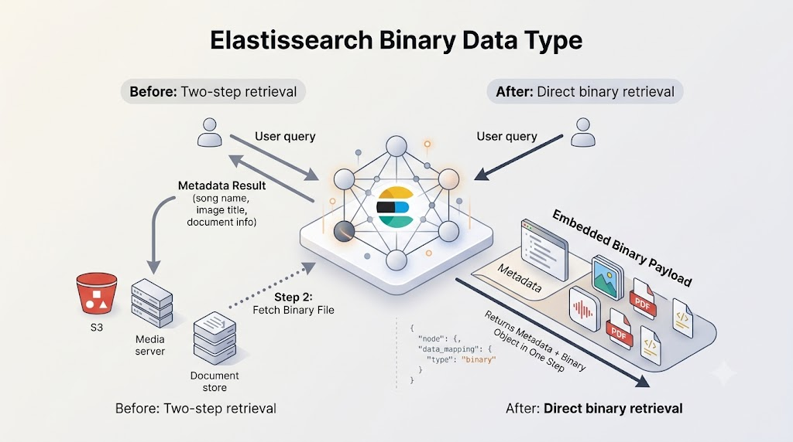

Elasticsearch Binary Data Type
Can store any Base64 encoded string, must not contain \n.

The
binary field type
is the same as the
keyword field type
if you switch off the
inverted index
and the
doc_values, so then what is its purpose?
PUT /my_index
{
"mappings": {
"properties": {
"payload": {
"type": "binary"
}
}
}
}
A typical use case for Elasticsearch is as a Metadata Search Engine,
with at least one of the fields in a document pointing to an object in
another repository, such as links to images, films and songs, while the
rest of the fields are used to locate that object, (song name, image
description, director). To get the object itself you first need to
search in Elasticsearch and then run a GET request in the other
location. With the binary field type we can store the
object directly in a field in Elasticsearch, now the query to
Elasticsearch will bring back the binary object, there is
no need to run a second request anywhere else.
This is great if you want to store the data in one place and you care about the information retrieval being as fast as possible.
Note: binary objects can be very large and will increase
storage costs in Elasticsearch.
Potentially useful use cases:
Files that are a few bytes or kilobytes in size, maybe even a few megabytes, like images, (png, jpg), short mp3s, static HTML pages, other documents, (txt/pdf/doc). These should also all be static files that are not going to be changed too frequently over time.
Use cases to avoid:
Large files, like videos, lossless songs, very large images, and so on, this list should include any files that are frequently updated like living documents in Google Docs/Microsoft Word or any other files created in collaboration or otherwise. (Frequently is difficult to define and it depends on the use case, as a rule of thumb if the file is changed 100s of times a day/week/month it is probably one to avoid).